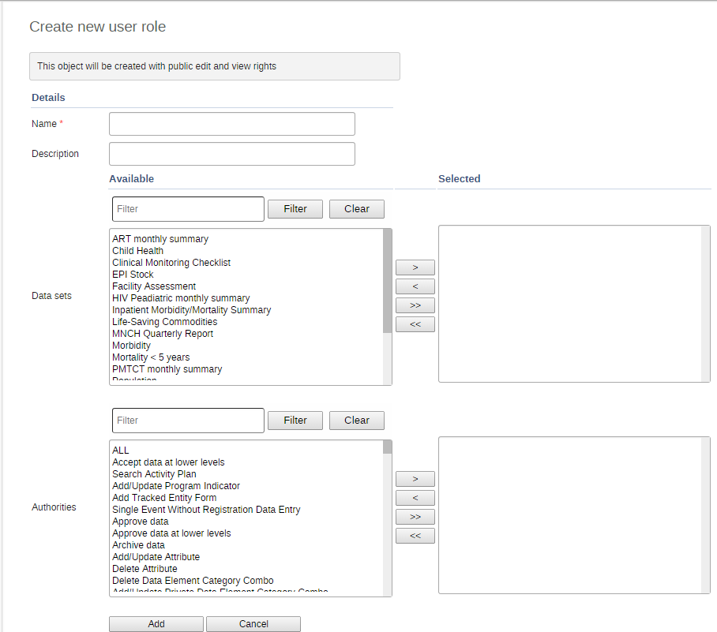

Role maintenance page
|  |
Open the Users app and click User role.
Click Add new.
Enter a Name, for example "Super user" or "Admin user".
Enter a Description.
In the Data sets section, double-click the data sets you want the user role to have access to.
In the Programs section, double-click the programs you want the user role to have access to.
Authorities section, double-click the authorities you want to give to the user role.
Click Add.
![[Tip]](resources/images/admon/tip.png) | Tip |
|---|---|
You can select multiple data sets, programs or authorities:
|
Open the Users app and find the type of user object you want to edit.
In the object list, click the relevant object and select Edit.
Modify the options you want.
Click Save.
Open the Users app and find the type of user object you want to delete.
In the object list, click the relevant object and select Remove.
Click OK to confirm.
Open the Users app and find the type of user object you want to view.
In the object list, click the relevant object and select Show details.
Open the Users app and find the type of user object you want to modify.
In the object list, click the relevant object and select Sharing settings.
(Optional) Search for a user group and select it, then click the plus icon. The user group is added to the list.
External access (without login)
Change the settings for the user groups you want to modify.
None:
Can view: Everyone in the user group can view the object
Can edit and view: Everyone in the user group can view and edit the object
Click Save.